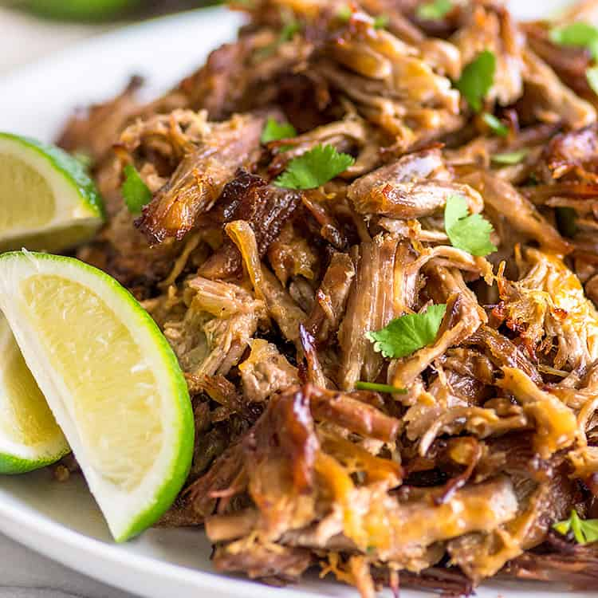

<
Carnitas

Description
There are many ways to make carnitas, but most will argue that it is NOT carnitas if it isn’t slow cooked in manteca (lard). I understand the desire to keep traditions alive in Mexican cuisine, but I disagree with this idea. I’ve made carnitas in a slow cooker or pressure cooker using completely different methods and those taste just as good in my opinion.
Thats not to say I don’t think it is important to teach people the traditional way of making carnitas. This is a dish that Mexican people are very passionate about- every region has their own style of making it but it is said to have originated in the state of Michoacán.
Ingredients
- Pork Shoulder-I like to dry brine large pork shoulder chunks in kosher salt for at least an hour before cooking. Over night in the fridge would be really great if you have the time.
- Manteca-Manteca is lard and a lot of people would argue that it's not carnitas if it isn't slow cooked in lard (confit). I personally disagree with this since I've made carnitas many times using a completely different method and it turned out just as good. But it is important to note that the traditional way to make carnitas is by slow cooking it in lard.
- Seasoning-Salt, Mexican oregano, cumin, & black pepper.
- Orange-Use both the juice & peels!
- Aromatics-Garlic, onion, bay leaves, and cloves. I've seen a lot of carnitas recipes that also add cinnamon. I'm personally not a fan but feel free to add a cinnamon stick in there as well.
- Evaporated milk-Milk is a great tenderizer and I'm using evaporated milk because it goes through a process called fore-warming, which prevents it from curdling when introduced to high temperatures. You can use regular whole milk, but just be careful because it can curdle and turn sour when you pour it in. It's best to add it in after the water and orange juice, since they will bring the temperature down a bit.
- Mexican Coca Cola-Add this in the last 30 minutes of cooking for color & flavor. I don't like to add too much since it is sweet- half a bottle is enough.
Steps
- Cut your pork shoulder into large chunks and cover in salt for at least 1 hour in the fridge. This is called dry brining and if I have time, I usually do this overnight.
Melt the lard in a large pot over medium heat. You can use a wooden spoon to check when it is hot enough- bubbles will float to the surface rapidly.
*You only need enough lard to cover 80% of the pork- it does not need to be fully submerged. For 3 lbs of pork shoulder in a 10 inch pot, you'll need 1 lb of lard.
- Add the pork shoulder chunks and leave it for 20 minutes, moving occasionally to make sure the bottom does not burn.
- After 20 minutes, flip over and repeat on the other side.
- Next reduce the heat to medium low, then add the onion, garlic, black pepper, cumin, cloves, bay leaf, juice of an orange, the peels, water, & evaporated milk. SLow cook for 1 1/2 hours.
- Add Mexican Coca-Cola and slow cook for another 20 minutes.
- Remove from pot and let it cool. The pork chunks should be so tender that you can see them jiggle when handling.
- Shred the carnitas easily with your hands and that's it! The inside should be super tender and juicy, and the outside crispy with a beautiful dark & shiny color.